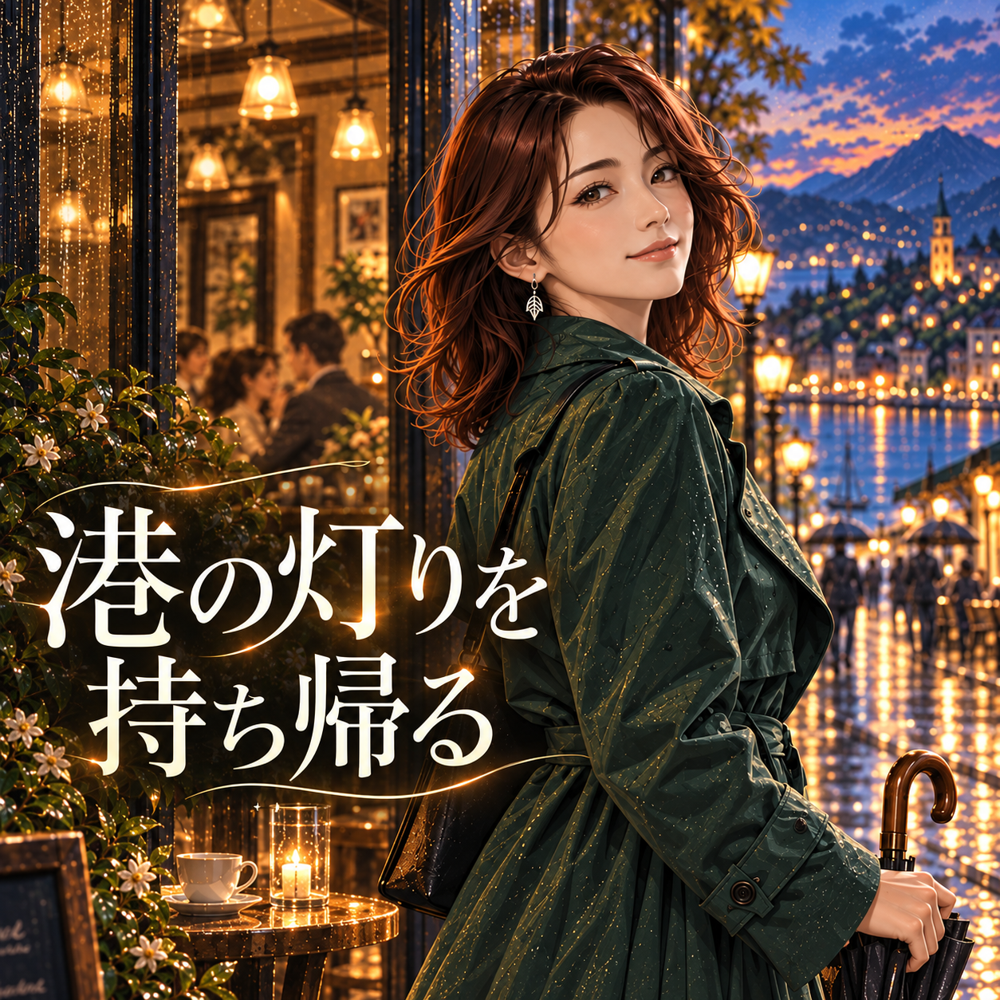
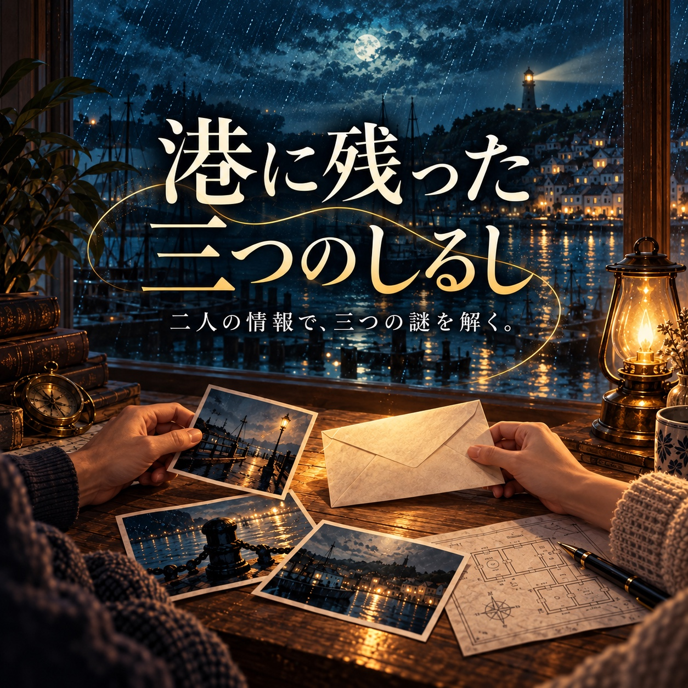
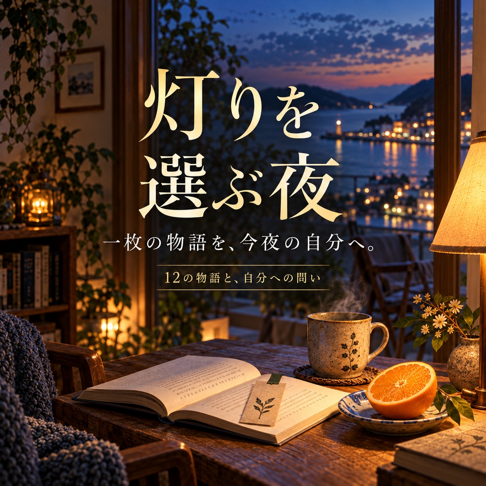

Gumroad · 表示500円JPY
- 購入後ページで日英の全文を読む。
- 同じ購入で完成済みの読書ZIPも取得。
小さな仕事の物語 · 作品と受け取り方
楽しみたいことから、まず無料の見本を選べます。続きや制作キットを購入する場合は、内容と受け取り方を確かめてください。
同じ作品の別の受け取り方は、片方を選べば十分です。両方を買う必要はありません。無料作品の結末を読むための購入も不要です。

読者向け · 日英イラスト短編
昔の恋人の写真展を訪ねた紗季。海辺の駅、雨のカフェ、夕方の窓辺を経て、旅の終わりに一つの選択をします。三つの場面と二つの完結した結末、同じ架空の成人女性のイラスト3点を収録。
短い完結作品です。個人鑑賞・個人の非商用印刷用。原画像の再配布や素材転売は含みません。スマホでZIP内のHTMLを開くには対応アプリが必要です。GumroadではZIPを開かず購入後ページの全文を読めます。

遊び手向け · 日本語の協力謎解き
宛先、写真の順番、部屋の位置。二人に分かれた情報を話し合い、三つの依頼を解く短編集です。一人で両方の情報を読んでも遊べます。
無料の「二枚の帰り道」とは別の新作です。無料一問の解答・結末は購入不要。一台で遊ぶ時は相手へ渡す前にカードを閉じてください。
作者向け · 日英の読書ページを作る
自分の物語を、日本語・英語で読める作品へ。三つの場面と二つの結末を切り替えて読むページ、画像ギャラリー、家庭印刷用の試作ページを作れます。
購入前に：Python 3が動くパソコン、自分の三場面・二結末の日英本文、利用権のある1024×1536pxのPNG3点が必要です。コードを実行する形式で、文章・翻訳・画像の作成や販売は含まれません。

一人の読書時間に · 物語と内省カード
十二の短い情景と、自分へ持ち帰る問い。気になる一枚を読み、問いに答えても、読むだけで閉じても終えられます。
題名・情景には英訳がありますが、物語・問い・任意の行動の本文は日本語です。個人の非商用鑑賞・個人印刷用。印刷は試作で、まず一ページの試し刷りが必要です。無料二枚の続き・問いは購入不要です。